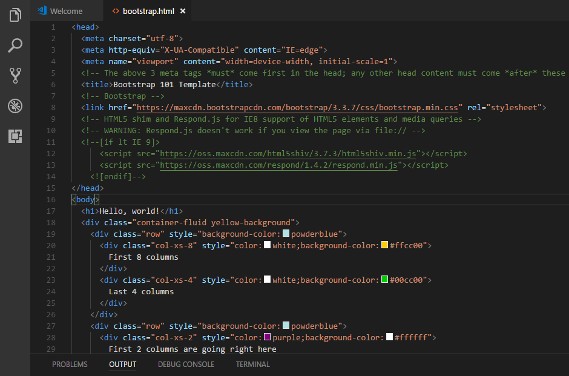
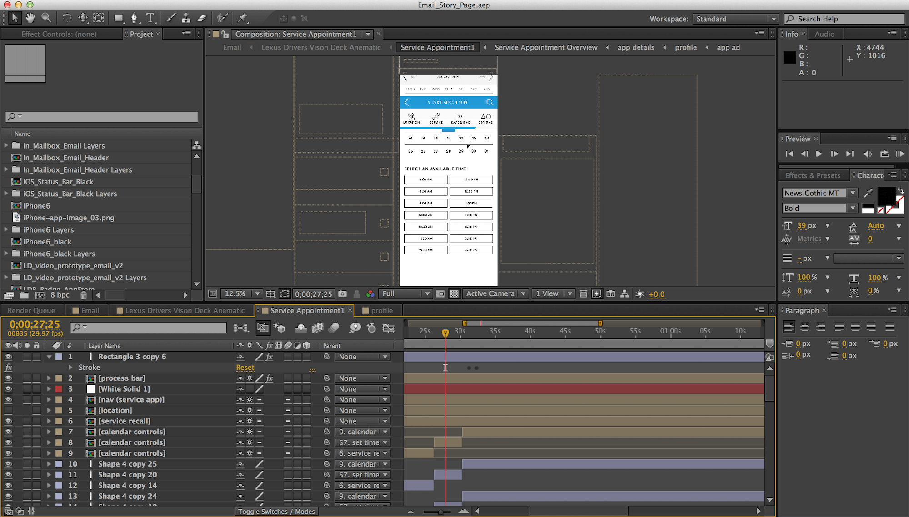
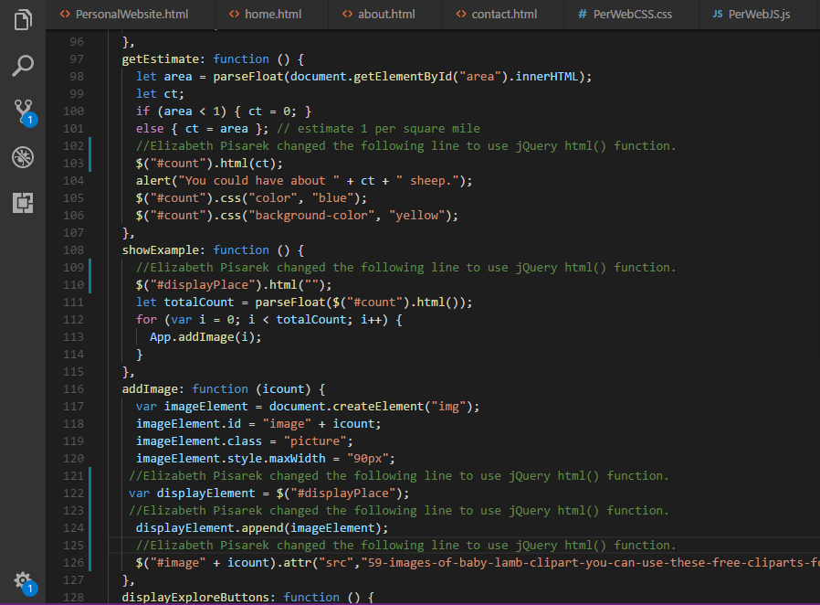

Hello! My name is Elizabeth Pisarek. I am an IDM: Computer Science major. I'm a senior at Northwest Missouri State University and will be graduating this May 2019! Currently, seeking a full-time position after graduation in the field of computer programming and web developing, where I can apply my knowledge and skills for continuous improvement. Just doing my best to figure out God's plan for me. God is good all the time & all the time God is good! Fun fact: Something about myself that no one would guess by looking at me would be that I can ride a motorcycle.

name is Elizabeth Pisarek. I am an IDM: Computer Science major. I'm a senior at Northwest Missouri State University and will be graduating this May 2019! Currently, seeking a full-time position after graduation in the field of computer programming and web developing, where I can apply

name is Elizabeth Pisarek. I am an IDM: Computer Science major. I'm a senior at Northwest Missouri State University and will be graduating this May 2019! Currently, seeking a full-time position after graduation in the field of computer programming and web developing, where I can apply

name is Elizabeth Pisarek. I am an IDM: Computer Science major. I'm a senior at Northwest Missouri State University and will be graduating this May 2019! Currently, seeking a full-time position after graduation in the field of computer programming and web developing, where I can apply

Social Media
Telephone #